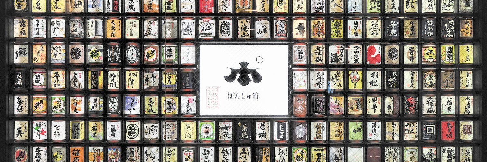
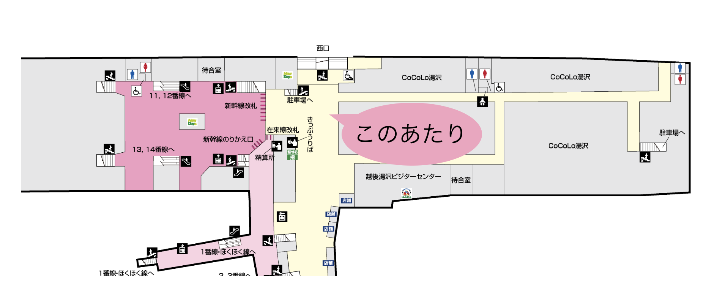
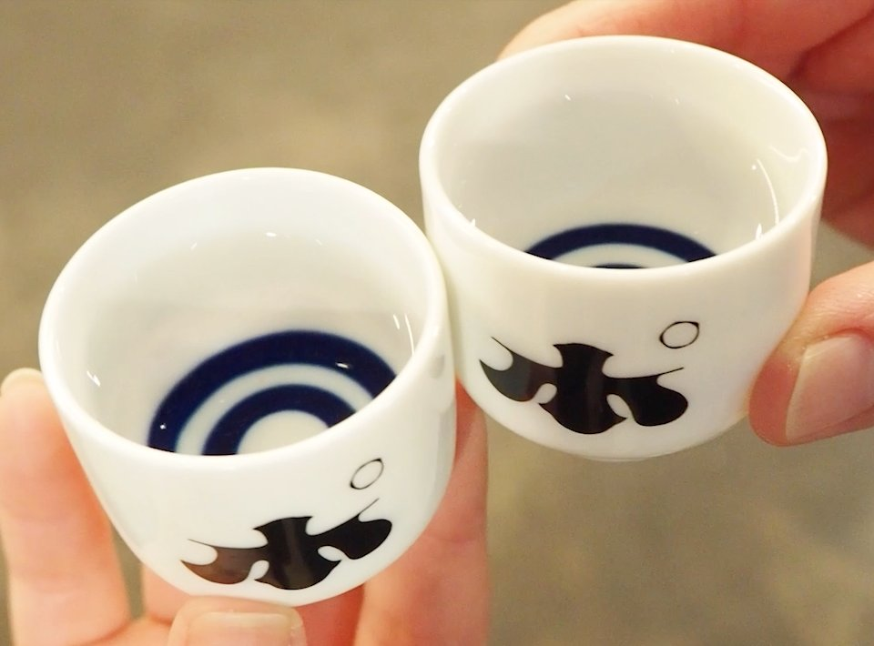
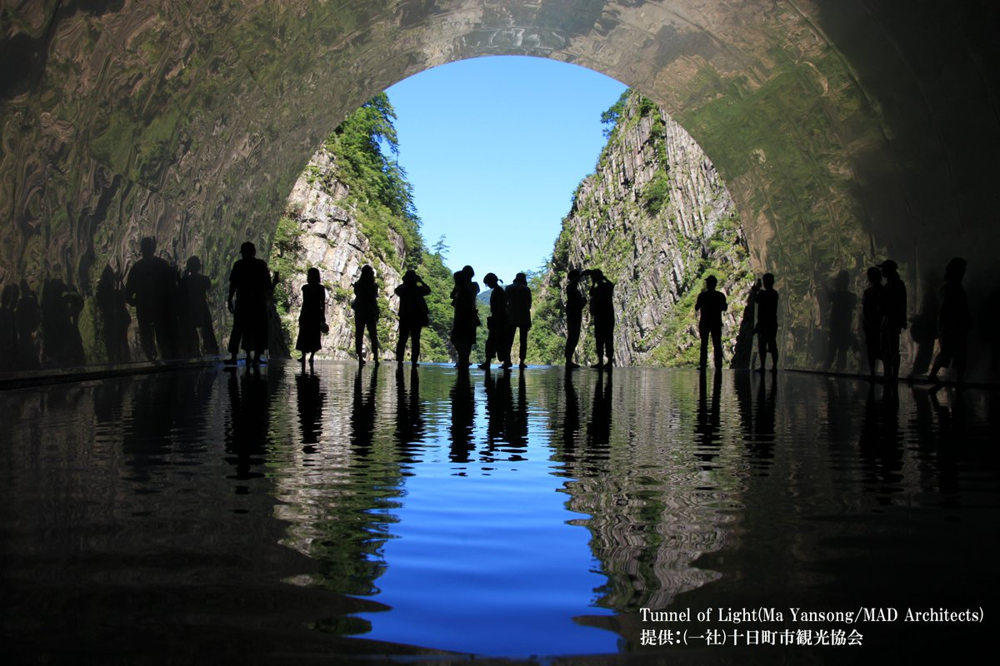

集合場所
12/29(水) 13:00
新幹線改札でたところ
タイムスケジュール
-
13:00
越後湯沢駅改札集合
改札前当たりに集合。昼ごはん食べにいきましょう。 おすすめはそば処中野屋
-
14:00
ぽんしゅ館へ移動
日本種を楽しんだり、日本酒風呂に行ったりしましょう
-
16:00
チェックイン
このあたりで宿にチェックインしましょう
散策へ -
19:00
夕飯を探す。頼んだ。
おすすすめは茶屋森瀧
-
2日目
10:00宿でますよ
清津峡渓谷いきますよ 10:30駅前発の森宮野原駅行きバス=>時刻表
-
15:30
越後湯沢に戻る
昼ごはんはこの時間までに清津峡渓谷周辺で 15:47入口発の湯沢駅行きバス=>時刻表
行きたいところ

ぽんしゅ館
越後湯沢駅にある有名お土産？店。
お昼ご飯食べ終わったらここで酒飲んだり、酒風呂いきましょう(2日目の帰り際でもいいかも)
企画者はここで1万円分のお土産買って帰ります。
受付で500円をお支払い頂くとお猪口とコイン５枚もらえる。
日本酒マシーンからお好みの地酒を選ぶらしい。
酒風呂もあるらしい。

清津峡渓谷
とにかく良い感じの写真が撮れるとの噂のスポット。
1000円で入れます。暖かい服装と動きやすい靴で。
宿泊地情報
-
ホテル湯沢
〒949-6101
新潟県南魚沼郡湯沢町湯沢３８８－３TEL 025-784-2044
チェックイン時間 16:00
(この時間なら大丈夫 15:00～20:00)チェックアウト時間 10:00
アメニティ等、その他の情報はこちら -